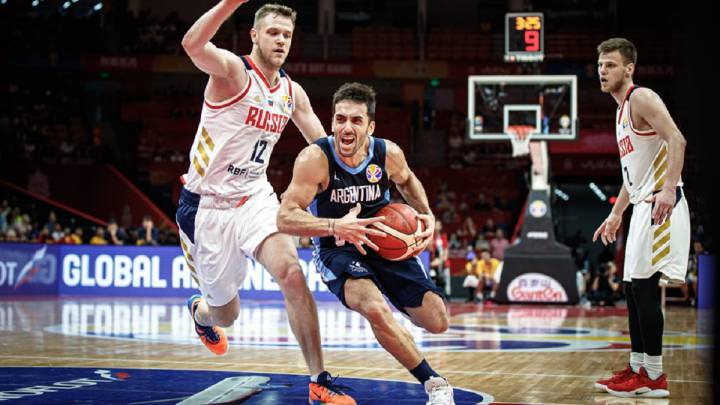

En 1891, James Naismith intentaba idear un deporte que sus alumnos pudieran practicar bajo techo, pues los duros inviernos en Nueva Inglaterra dificultaban la realización de ejercicio al aire libre. Las actividades de educación física que se practicaban en la época se basaban en los métodos alemanes, monótonos y poco indicados para un grupo de jóvenes llenos de energía. Naismith se inclinaba por un juego de pelota, para motivar mejor a sus alumnos, pero los deportes populares por entonces se caracterizaban predominantemente por el uso de la fuerza o el contacto físico y eran inadecuados para practicarlos en un gimnasio. Aunque a veces se mencionan los antiguos juegos de pelota pok-ta-pok y tlachtli —de origen maya y azteca respectivamente— como antecedentes del baloncesto moderno, según su inventor la idea de utilizar los tiros a una canasta como objetivo del juego provino de un antiguo juego de su infancia denominado duck on a rock —o 'pato sobre una roca'— que consistía en alcanzar un objeto colocado sobre una roca lanzándole una piedra. Naismith encargó cajas de unos 45 cm2 para utilizar como blanco, pero el bedel del colegio solo pudo conseguirle unas cestas de melocotones, que mandó colgar en las barandillas de la galería superior que rodeaba el gimnasio, a una determinada altura.7 Como Naismith tenía 18 alumnos, decidió que los equipos estuviesen formados por nueve jugadores cada uno. Pronto el número de jugadores se redujo a siete, y, en 1896, al actual de cinco jugadores.
Base: También llamado playmaker ("creador de juego", "armador"). Normalmente el jugador más bajo del equipo es el base que significa que sube el balón y debe tener buen manejo del balón, también tiene que tener buen manejo para el pase. En ataque sube la pelota hasta el campo contrario y dirige el juego ofensivo de su equipo, mandando el sistema de juego. Sus características recomendables son un buen manejo de balón, visión de juego, capacidad de dar buenos pases, buena velocidad y un acertado tiro exterior. En los bases son tan apreciadas las asistencias como los puntos anotados, aunque un buen jugador debe conseguir ambas cosas. En defensa han de dificultar la subida del balón del base contrario, tapar las líneas de pase y estar atento a recoger los rebotes largos. Normalmente estos jugadores no son de una elevada estatura, pues lo realmente importante es la capacidad organizativa y de dirección de juego. Conocidos como 1 en la terminología empleada por los entrenadores.
Escolta: Jugador normalmente más bajo, rápido y ágil que el resto, exceptuando a veces el base. Debe aportar puntos al equipo, con un buen tiro incluyendo el tiro de tres puntos, un buen dominio del balón y una gran capacidad de entrar a canasta. Conocidos como 2 en la terminología empleada por los entrenadores.